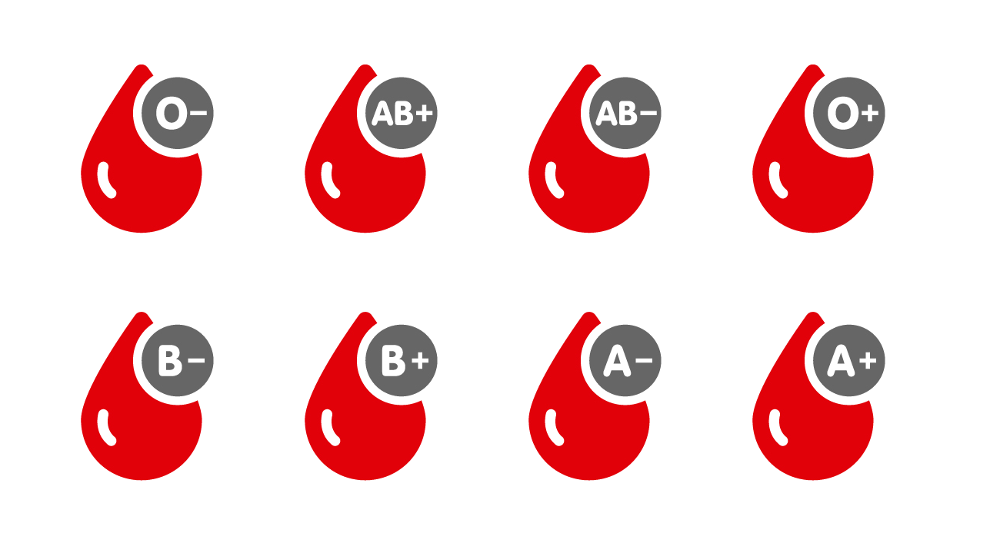

Blood Donation
A single donation can save three lives. One blood donation provides different blood components that
can help up to three different people. Blood banking refers to the process of collecting, separating,
and storing blood. Blood banks collect blood and separate it into its various components so they can
be used most effectively according to the needs of the patient. The donor usually gives one pint of
whole blood. The blood is tested for blood type and infectious disease (HIV, Hepatitis B, Hepatitis C
and Syphilis), and then the blood is separated into its components red blood cells, plasma and platelets.
The stock blood is then crossmatched with patients blood before transfusion.
Blood donation is safe. New, disposable equipment is used for each donor, so there's no risk of
contracting a bloodborne infection by donating blood. Within 24 hours of a blood donation, your
body replaces the lost fluids. And after several weeks, your body replaces the lost red blood cells
. Health benefits of donating blood include good health and reduced risk of cancer and hemochromatosis.
It helps in reducing the risk of damage to liver and pancreas. Donating blood may help in improving
cardiovascular health and reducing obesity.
You are eligible to donate blood if:
- you are in good health
- weigh at least 45kg
- you are 18 to 65 years old
You are not eligible to donate blood if you:
- have ever used self-injected drugs (non-prescription)
About Blood
Blood is a body fluid in humans and other animals that has many different functions, including: transporting oxygen and nutrients to the lungs and tissues forming blood clots to prevent excess blood loss carrying cells and antibodies that fight infection bringing waste products to the kidneys and liver, which filter and clean the blood regulating body temperature
There are four blood groups: A, B, AB and O and two types of RH factor: Positive and Negative. 